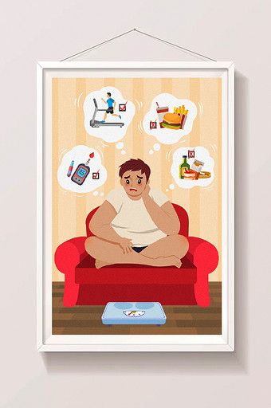

Panduan Nutrisi Sehat Untuk Penderita Chronic Kidney Disease (CKD)

Nutrisi yang seimbang dan sesuai dengan kebutuhan penderita Penyakit Ginjal Kronis (CKD) sangat penting untuk menjaga kesehatan ginjal dan mencegah komplikasi. Namun, penting untuk dicatat bahwa rekomendasi nutrisi dapat bervariasi tergantung pada tingkat keparahan CKD dan kondisi kesehatan individu. Sebaiknya, penderita CKD berkonsultasi dengan dokter atau ahli gizi untuk membuat rencana diet yang sesuai dengan kebutuhan mereka. Berikut adalah beberapa panduan umum untuk nutrisi bagi penderita CKD:
Pengendalian Asupan Protein:
Penderita CKD perlu membatasi asupan protein, terutama protein hewani seperti daging, telur, dan produk susu. Ini karena metabolisme protein menghasilkan limbah nitrogen yang harus disaring oleh ginjal. Menjaga asupan protein dapat membantu mengurangi beban kerja pada ginjal. Namun, jumlah dan jenis protein yang dianjurkan dapat bervariasi tergantung pada tingkat CKD dan kebutuhan individu.
Pembatasan Sodium (Garam):
Pembatasan sodium membantu mengendalikan tekanan darah dan menjaga keseimbangan cairan. Penderita CKD sebaiknya membatasi konsumsi garam, termasuk dari makanan olahan, makanan kaleng, dan makanan cepat saji.
Pembatasan Kalium:
Beberapa penderita CKD dapat mengalami peningkatan kadar kalium dalam darah (hiperkalemia). Oleh karena itu, membatasi konsumsi makanan tinggi kalium seperti pisang, jeruk, tomat, dan kentang dapat membantu mengelola kadar kalium.
Pembatasan Fosfor:
Penderita CKD sering mengalami peningkatan kadar fosfor dalam darah. Pembatasan konsumsi fosfor, terutama dari makanan olahan dan minuman berkarbonasi, dapat membantu mengelola kadar fosfor.
Pemantauan Asupan Cairan:
Penderita CKD perlu memantau asupan cairan mereka, terutama jika mereka mengalami masalah dengan penumpukan cairan. Batasi konsumsi minuman berkafein dan hindari minuman beralkohol.
Asupan Energi yang Cukup:
Penderita CKD perlu memantau asupan cairan untuk mencegah penumpukan cairan yang berlebihan dalam tubuh. Ini melibatkan membatasi konsumsi minuman, termasuk air, dan memperhatikan jumlah cairan dalam makanan seperti buah dan sup.
Pemantauan Gula Darah dan Kontrol Diabetes:
Meskipun tidak ada pembatasan khusus pada karbohidrat dan lemak sehat, penderita CKD perlu memantau asupan kalori dan memilih sumber karbohidrat dan lemak yang sehat, seperti buah-buahan, sayuran, kacang-kacangan, dan minyak zaitun.
Suplemen Vitamin dan Mineral:
Penderita CKD mungkin membutuhkan suplemen vitamin dan mineral tertentu, terutama vitamin D dan kalsium, karena gangguan metabolisme vitamin D dan masalah keseimbangan kalsium dapat terjadi pada CKD.